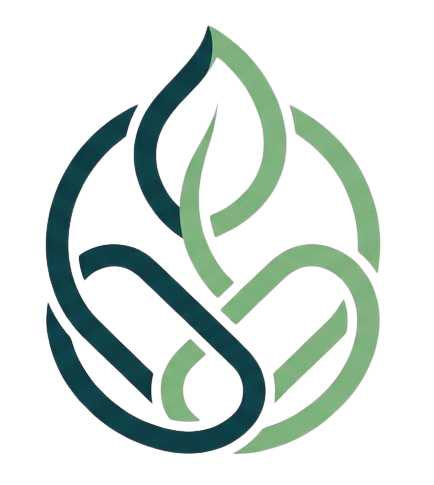

KopdesLink — Pitch Deck (12 slide) Ekspor PDF: Ctrl/Cmd + P → Tujuan “Save as PDF” → Layout Landscape → Margins NoneSIMKOPDES Hub menghubungkan tiap Kopdes ke pemerintah (vertikal). KopdesLink menghubungkan Kopdes satu sama lain (horizontal) — mengubah data pasokan yang sudah terpusat menjadi transaksi gotong-royong nyata.
Barang habis → omzet hilang, pelayanan anggota terganggu, pengurus mencari pasokan ke distributor jauh & mahal.
Surplus sembako/obat menganggur, berisiko rusak/kedaluwarsa — modal desa mengendap.
Kopdes A tidak tahu Kopdes B 4 km punya surplus barang yang sama. Gotong-royong ekonomi antar-desa mati.
Kopdes Merah Putih dibangun (Inpres 9/2025) — makin banyak node, makin besar kerugian akibat silo pasokan.
laba koperasi milik desa (82% ke warga via kupon). Setiap omzet hilang = manfaat warga hilang.
Fungsi: mencatat & mengawasi. Kopdes → pemerintah.
Fungsi: bertindak. Kopdes ↔ Kopdes.
Data pasokan sudah terpusat di Hub — tapi belum ada yang mengubahnya jadi transaksi gotong-royong. Itulah celah kami.
Jual → stok turun otomatis. Stok opname digital. Prediksi “habis dalam ± X hari” (moving average).
Stok kritis → pindai surplus Kopdes terdekat (radius, geospasial) → tampil di peta → ajukan permintaan B2B → pemasok setujui → stok berpindah.
Peta aliran barang antar-desa, barang paling rawan kosong, omzet terselamatkan — untuk Agrinas/Dinas.
Kebaruan tunggal: menjadikan surplus satu koperasi sebagai solusi kekosongan koperasi lain — otomatis, berbasis lokasi, pada skala nasional. Belum ada di ekosistem SIMKOPDES/Agrinas.
Peringatan muncul sebelum stok benar-benar habis — pemesanan ulang proaktif.
Kekosongan satu Kopdes ditutup surplus tetangga terdekat — bukan menunggu distributor pusat.
Tiap transaksi tercatat & terpetakan → bahan kebijakan pasokan Agrinas/Dinas.
MVP membaca langsung database resmi hackathon (proksi SIMKOPDES) dan menjalankan skenario asli:
Produk Beras SPHP 5KG (barcode nyata 8994209001796), jarak antar-Kopdes maks 8,3 km.
| Kopdes | Stok Beras | Peran |
|---|---|---|
| Madani Tirta Bakunase | −100 | butuh (backorder) |
| Angkasa Fatubesi (3,7 km) | 1000 | surplus → pemasok |
| Kelurahan Asri (5,8 km) | 385 | surplus |
koperasi nyata (semua berkoordinat)
barcode dipakai >1 Kopdes → kunci pencocokan lintas-koperasi
omzet terselamatkan dari 1 transaksi demo
Baca data pasokan minimum dari API/DB SIMKOPDES Hub (read-only). Karena Hub sudah mengagregasi nasional, kami tak perlu 80.000 koneksi atau federated query.
Salinan ringkas ter-index geospasial (Haversine/PostGIS), dipartisi per wilayah. Pencocokan lintas-Kopdes via kode_barcode. Baca cepat, tahan gagal (CQRS).
Transaksi B2B ditulis-balik ke Hub (produksi). SIMKOPDES tetap sumber kebenaran — kami tak pernah memutasinya diam-diam.
Stack: Next.js PWA · Postgres (read-only) · Leaflet/OSM · GCP Cloud Run. Offline-friendly untuk konektivitas desa.
Payung 80.000 Kopdes + 7 unit usaha wajib.
Operator awal → diserahkan ke desa. Kami alat transisi menuju kemandirian.
Kopdes sudah terintegrasi SIMKOPDES — data siap dihubungkan.
laba ke desa → warga (kupon). Efisiensi stok = manfaat langsung warga.
Menembak 2 tema TOR sekaligus: Tema 1 (Peningkatan Volume Usaha) & Tema 2 (Optimalisasi Potensi Desa). Challenge question TOR bahkan menuliskan persis “mempertemukan koperasi dengan buyer/offtaker yang tepat” dan contoh solusi “Supply Chain Monitoring System”.
penjualan yang tak jadi hilang
tetangga vs distributor pusat
jam, bukan hari
jumlah B2B antar-Kopdes
Rantai dampak:
Efisiensi stok→Laba koperasi naik→97% ke desa→82% ke warga (kupon)
Komisi tipis per matchmaking yang berhasil — hanya saat ada nilai tercipta.
Infrastruktur nasional untuk Kemenkop–Agrinas sebagai lapisan jaringan resmi di atas Hub.
Modul intelijen rantai pasok wilayah untuk pemda/Dinas Koperasi.
Fase awal fokus adopsi & bukti dampak, bukan monetisasi agresif — karena 97% laba milik desa, model harus pro-desa sejak hari pertama.
Berjalan di data nyata (Kupang). POS + prediksi + matchmaking + dashboard.
Integrasi read resmi ke SIMKOPDES Hub; pilot 1 kecamatan bersama Dinas & Agrinas.
Transaksi dua arah, sharding regional, event stream, prediksi ML.
Tulang punggung redistribusi Agrinas & peta rantai pasok Kopdes real-time untuk Kemenkop.
Masalah, kebijakan, dampak
PWA, peta, alur demo
Integrasi DB nyata, matchmaking
Model & presentasi
Hub vertikal untuk pemantauan. KopdesLink horizontal untuk aksi. Kekosongan stok satu Kopdes, ditutup surplus tetangga — otomatis, pada skala nasional.
Penggunaan AI (disclosure TOR Bagian J): ide inti asli tim; AI dipakai sebagai alat bantu riset, dokumentasi, & coding assistant.